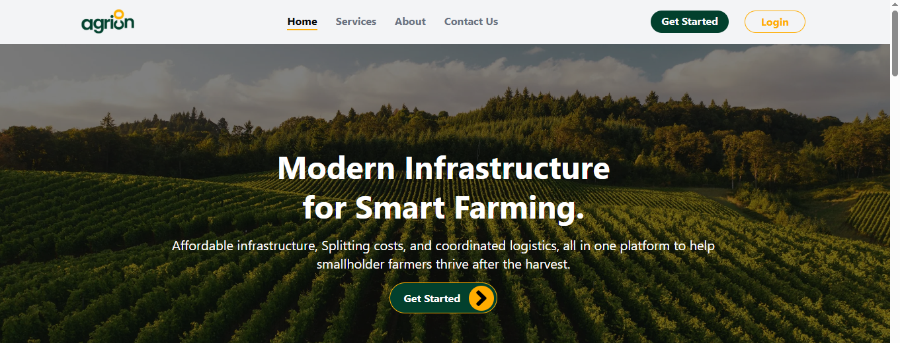

Project: AgriCon
Category: Agriculture
Tools used:
FigmaGoogle DocsLinearPostman
Product Asset: Agricon's PRD
Product Link: Agricon.com

Product Overview
AgriCon is a web platform that helps small and medium-scale farmers across Nigeria access critical post-harvest infrastructures such as dryers, cold rooms, and processing facilities through a shared booking model. AgriCon empowers farmers to reduce losses, preserve value, and sell produce more profitably. Whether via smartphone or basic feature phone, farmers can book services, check prices, and coordinate logistics with ease.
Problem Statement
Nigerian farmers, especially rural smallholders, face severe post-harvest losses due to limited access to affordable processing infrastructure like dryers, cold rooms, and packaging facilities. Combined with poor connectivity and weak logistics, this leads to wasted crops, suppressed income, and deepening rural poverty despite growing demand for processed agricultural goods.
Goals & Solution
Product Goal:
Reduce post-harvest losses and increase income for Nigerian farmers by enabling access to shared agricultural infrastructure through a smart, inclusive, and scalable platform.
Solution:
- Mobile Access: Ensuring digital inclusion for both smartphone and feature phone users.
- Infrastructure Discovery & Booking: Find and book nearby dryers, cold rooms, and processors.
- Group (Cooperative) Bookings: Share costs for access to expensive infrastructure.
Market & User Research
- 95% of farms lack collateral to access credit or infrastructure.
- Farmers lose over half of their produce due to poor processing/storage.
- ColdHubs and Ecotutu serve niche storage needs but don’t provide booking coordination, processing, or broad access via USSD.
User Personas
1. Amina Yusuf – Yam Farmer (Kano)
Pain: Loses 40% of yams post-harvest due to heat and spoilage.
Needs: Affordable cold storage, easy to book and nearby.
Barrier: Poor internet and limited digital skills.
2. Bako Adeyemi – Infrastructure Owner (Lagos)
Pain: Underutilized solar-powered cold room.
Needs: Consistent farmer traffic, easier booking oversight.
Barrier: Forecasting demand and balancing usage.
3. Ngozi Mbekwe – Coop Leader (Enugu)
Pain: Booking delays and miscommunication within her group.
Needs: Bulk scheduling, shared payment model, and market prices.
Barrier: Fragmented trust in digital tools.
User Flow & Customer Journey Map
Farmer Flow:
- Register → Set Profile → Search Nearby Facilities → View Prices & Availability → Book Slot (Solo or Group) → Pay via Mobile Money → Use Service
Infrastructure Owner Flow:
- Register Facility → List Type, Hours & Prices → Update Availability → Accept/Confirm Bookings → Receive Payment → Manage Dashboard
Admin/Coop Leader Flow:
- Add/Invite Members → Coordinate Group Bookings → Monitor Activity → Analyze Booking & Usage Trends
Success Metrics
- Post-harvest loss reduction
- Average monthly farmer income
- Registered users
- Infrastructure utilization
- USSD adoption
- Customer satisfaction (CSAT)
My Role / Tasks
- Defined AgriCon’s vision, mission, and product scope alongside other PM interns
- Led user research surveys
- Prioritized MVP features using the MoSCoW method
- Wrote the PRD
Key Learnings
- Offline-first development is non-negotiable in rural Africa.
- Trust = Access: Transparent booking + price visibility boosts adoption.
- Shared access models work only if payments, timing, and communication are clearly supported.
- Real impact comes not just from tools, but from simplifying decisions for farmers with price trends and booking intelligence.
← Back to Projects